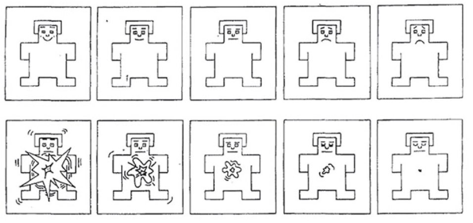
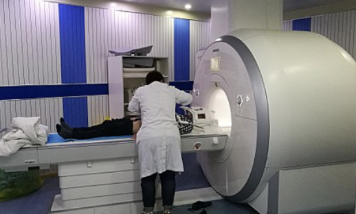
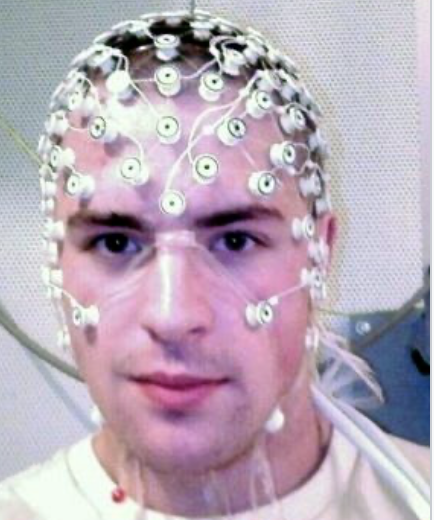
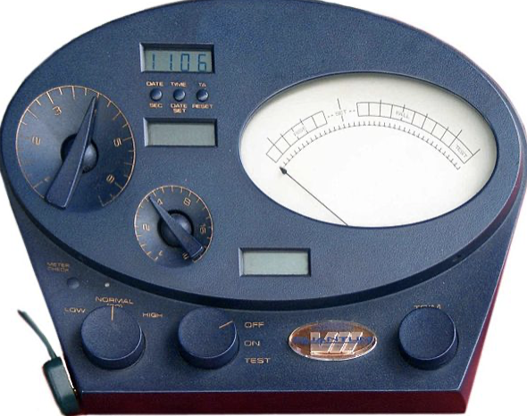
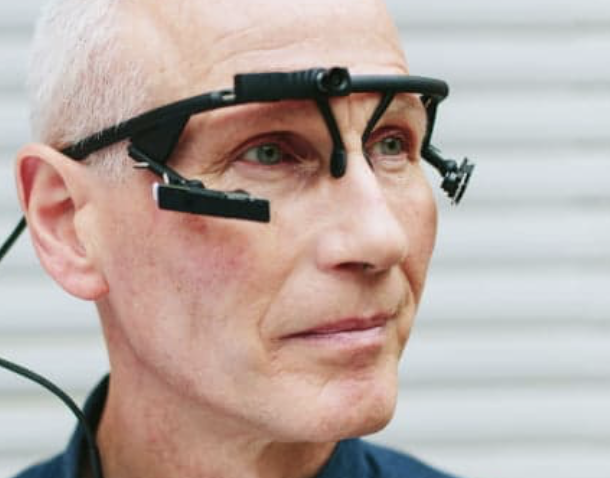
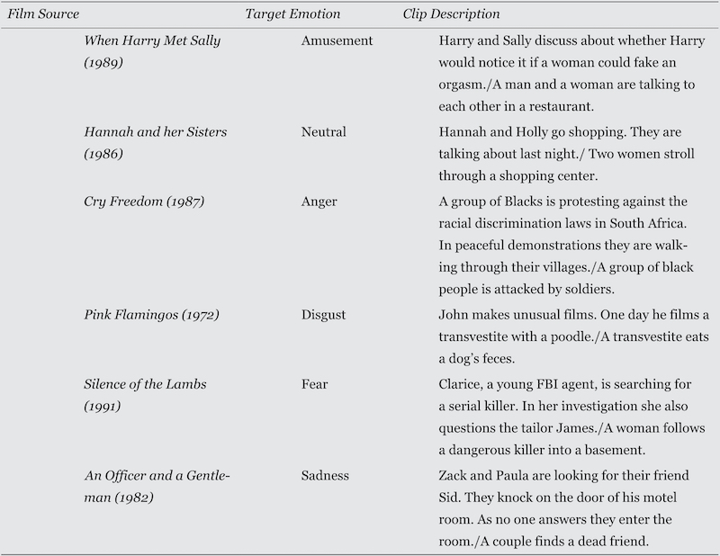

Pomiar emocji
Pomiar emocji
- Kwestionariusze
- Ekspresja mimiczna
- Obrazowanie CUN
- Obwodowy układ nerwowy i miary fizjologiczne
Kwestionariusze
- PANAS (Positive and Negative Affect Schedule)
- Self-Assessment Manikin
PANAS
- 10/20 słów opisujących emocje
- “Do jakiego stopnia, generalnie, czujesz się…”
- Likert 1-5
- Skala pozytywnego afektu, skala negatywnego afektu
- W polskiej adaptacji: SUPIN Skala uczuć pozytywnych i negatywnych* (P. Brzozowski)

SAM
- Metoda niewerbalna
- Badany wybiera dwa obrazki odzwierciedlające core affect
SAM

Skale do Pomiaru Nastroju i Sześciu Emocji
- Wojciszke & Baryła
- Skala Nastroju Ogólnego składa się z 10 twierdzeń sformułowanych w taki sposób, by wyrażały ogólny nastrój pozytywny lub negatywny, choć nie specyficzne emocje.
- Likert 1-5
- 10 pozytywnych przymiotników, 10 negatywnych przymiotników
Skale do Pomiaru Nastroju i Sześciu Emocji
- Kwestionariusz Emocji składa się z 24 przymiotników oznaczających nazwy dyskretnych emocji, po cztery na każdą z sześciu emocji głównych
Ekspresja mimiczna
- Facial Action Coding System (FACS)
- Systemy automatyczne
- Sędziowie
FACS
- Przeszkoleni eksperci kodują skurcze mięśni według ustalonego schematu
- Bardzo pracochłonna metoda (100 godzin szkolenia, godzina kodowania na minutę zachowania)
- Pracę nad automatyzacją trwają (Computer Expression Recognition Toolbox, CERT; FAST-FACS)
FACS

Sędziowie
- Założenie : ludzie potrafią trafnie rozpoznawać emocje innych ludzi
- Standardowy paradygmat sędziów kompetentnych
- Często używane w badaniach nad uniwersalnością kulturową
Obrazowanie CUN
- fMRI
- EEG, ERP
- MEG



Obwodowy układ nerwowy
- Aktywność elektrodermalna
- Tętno, ciśnienie krwi
- Szerokość źrenicy
- Mruganie
Aktywność elektrodermalna
- Inaczej: odpowiedź skórno-galwaniczna (GSR)
- Pomiar przewodnictwa elektrycznego powierzchni skóry
- Powiązana z reakcją współczulną (choć nie wprost)
- Zdziwienie, pobudzenie

(Church of Scientology, Mark Super VII Quantum E-meter)
Tętno, ciśnienie krwi
- Rzetelna rejestracja za pomocą EKG
- Strach, gniew, koncentracja uwagi, stres
Szerokość źrenicy i mruganie
- Pupilometria, Eye-tracking
- Pobudzenie, aktywność współczulna, zmęczenie, stres
- Locus ceruleus

Eksperymentalna indukcja emocji
Kwestie etyczne
- Kodeksy APA, PTP, NCN…
- Naukowcy nie powinni indukować emocji o intensywności wyższej niż w codziennych sytuacjach życiowych
- Interwencje również powinny przypominać sytuacje z codziennego życia
- Debriefing, zwłaszcza w przypadku negatywnych emocji
Problemy etyczne
Przykład badania z lat 50-tych (nie róbcie tego w domu! Ax et al. 1953):
- Badani podłączani byli do generatora szoków elektrycznych
- W czasie trwania badania generator nagle zaczynał dymić a eksperymentator z przerażeniem biegał w kółko (strach)
- W innym warunku eksperymentator przez 5 minut obrażał badanego (gniew)
Afektywne obrazy - IAPS
- International Affective Picture System (IAPS)
- Zestaw zdjęć i obrazów nacechowanych emocjonalnie
- Mniej więcej połowa zawiera sceny z ludźmi
Afektywne obrazy - IAPS
- Normy na pobudzenie i walencję
- Dostęp za darmo, ale trzeba poprosić o zgodę (i mieć PhD i obiecać, że się nie będzie rozpowszechniało materiałów)
IADS
- 168 nacechowanych afektywnie dźwięków
- Bodźce po 6 sekund
- Oceny arousal, valence i dominance (?)
OASIS

OASIS
- Open Affective Standardized Image Set
- Otwarty dostęp http://www.benedekkurdi.com/#oasis
Afektywne filmy
(Philippot, 1993; Gross, Levenson, 1995; Hewig et al. 2005)

Jeśli chcemy aby emocje zostały na dłużej…
- Przypomnij sobie pewne wydarzenie … jakie emocje wtedy czułeś? Przypomnij je sobie bardzo dokładnie. Postaraj się poczuć je jeszcze raz
- Problem - nie mamy gwarancji, że badany faktycznie poczuje daną emocję
Muzyka
- Bardzo skuteczny silny sposób indukcji emocji
- Problem - indywidualne preferencje i skojarzenia słuchaczy
- Rozwiązanie - wykorzystanie muzyki nieznanej
Muzyka
- Soundtracks (N = 110; < 30 s) (Eerola & Vuoskoski, 2011)
- Experimental Music (Emusic) (N = 140, 6 s), (Fan et al., 2017)
- Natural History of Song (NHS) (N = 118, 14 s) (Mehr et al., 2018)
- Emotional Analysis of Music (EmoMusic) (N = 744, < 30 s) (Soleymani et al., 1999)
Zaplanowane interakcje społeczne
- Można zrobić pod czujnym nadzorem komisji bioetycznych
- Np. procedura Stemmlera (1997/2001)
Indukcja gniewu
- Pomiar elektrofizjologiczny (gsr, bp, emg)
- Badani odliczają w dół od 18652 co 7 przez 1 minutę
- Eksperymentator na nagraniu wściekły, że badany się rusza, robi artefakty, za cicho liczy
- Komentarze coraz bardziej krytyczne i wrogie
- Po trzech próbach badany słyszał, że to co zrobił jest bezużyteczne i będzie musiał powrócić do zadania później
Zaplanowane interakcje społeczne
- Indukcja poczucia winy: aparat Brocka i Beckera (1966) psuł się w wyniku działania osoby badanej.
- Na dodatek eksperymentator mówił: “co się stało? Teraz już nigdy nie zrobię magisterki… Co zrobiłeś? Cóż, chyba skończymy eksperyment, aparat się popsuł…”
Zaplanowane interakcje społeczne
- Indukcja wstydu, Apsleer (1975):
- Tańcz do muzyki rockowej przez minutę
- Śmiej się przez 30 sekund jak g dybyś usłyszała super-śmieszny dowcip
- Zaśpiewaj Hymn Państwowy a’capella
- Udaj, że jesteś 5-latkiem mającym napad złości ponieważ nie chce się położyć do łóżka przez 30 sek.
Naturalnie występujące emocje
- Quasi-eksperymenty i eksperymenty w warunkach
naturalnych, np.:
- zgubiony bagaż na lotnisku
- obejrzenie emocjonalnego filmu w kinie
- wesele
Naturalnie występujące emocje
- Experience-sampling (coś jak metoda dzienniczków): o różnych porach aplikacja na telefonie/zegarku “woła” o podanie stanu afektywnego
- Może “wołać” w losowych porach albo w konkretnych sytuacjach (np. badany wszedł do sklepu, do pracy itd.)
Którą metodę wybrać?
Do rozważenia:
- Wymogi sytuacji eksperymentalnej
- Standaryzacja
- Poziom skomplikowania i trafność ekologiczna
- Wszystko ma swoje wady i zalety
Wymogi sytuacji eksperymentalnej
- Czy badany potrafi łatwo odgadnąć, że jego emocje są manipulowane?
- I jeśli tak… czy to jest big deal?
- Warto jest czasem użyć cover story ?(uwaga! to nie to samo co oszukiwanie badanych!) np. mówiąc, że badanie to tak na prawdę dwa niezależne eksperymenty
Standaryzacja
- Czy wiemy, że nasza metoda indukcji emocji jest trafna i rzetelna?
- Trafna, tj. czy indukuje taką emocję, jaką chcemy
- Rzetelna, tj. czy robi to podobnie u większości ludzi
Poziom skomplikowania i trafność ekologiczna
- Czy interwencja jest podobna do prawdziwego życia?
- Czy nie jest zbyt “zamieszana”?
- Czy metoda uruchamia procesy obecne w prawdziwym życiu?